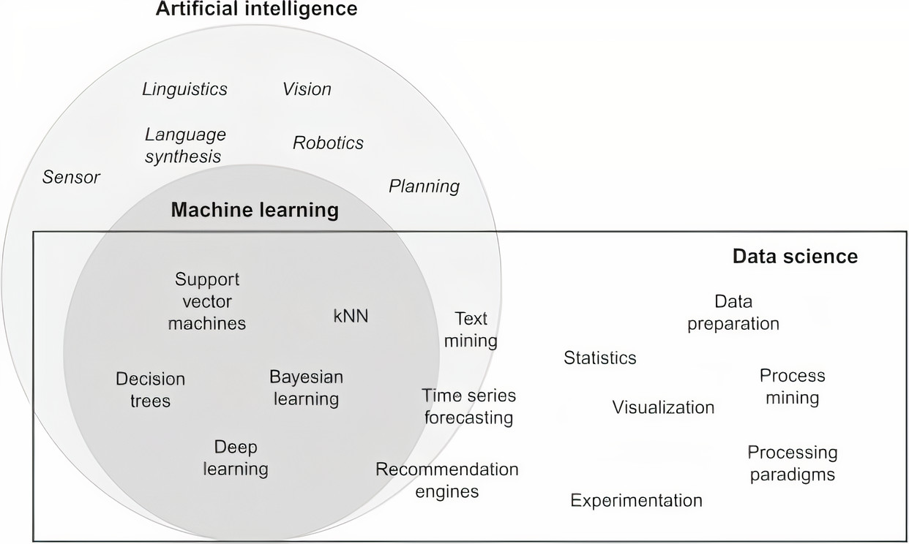

Introdução à Inteligência Artificial
Kelvin de Lucca Feltrin
Londrina, 2021
Inteligência Artificial
Sistemas que simulam a capacidade humana para resolver problemas
Campos da Inteligência Artificial
História da IA
História sobre um robô desenvolvido pelos engenheiros Gregory Powell e Mike Donavan - evolui em torno das Três Leis da Robótica.
Desenvolveu uma máquina de decifrar códigos chamada The Bombe para o governo britânico, com o objetivo de decifrar o código do "Enigma", usado pelo exército alemão na Segunda Guerra Mundial.
Ele publicou seu artigo "Computing Machinery and Intelligence", onde descreveu como criar máquinas inteligentes e, em particular, como testar sua inteligência. Este Teste de Turing ainda é considerado hoje como uma referência para identificar a inteligência de um sistema artificial.
sediaram o Projeto de Pesquisa de Verão de Dartmouth sobre Inteligência Artificial (DSRPAI) de aproximadamente oito semanas no Dartmouth College em New Hampshire. Este workshop - que marca o início da AI Spring e foi financiado pela Fundação Rockefeller - reuniu aqueles que mais tarde seriam considerados os fundadores da AI.
ELIZA foi uma ferramenta de processamento de linguagem natural capaz de simular uma conversa com um humano, e um dos primeiros programas capazes de passar no teste de Turing.
Solucionador de problemas gerais que era capaz de resolver automaticamente certos tipos de problemas simples, como as Torres de Hanói.
James Lighthill publicou um relatório encomendado pelo British Science Research Council no qual questionava a perspectiva otimista dada pelos pesquisadores de IA. Em resposta, o governo britânico encerrou o apoio à pesquisa de IA em todas, exceto três universidades (Edimburgo, Sussex e Essex) e o governo dos EUA logo seguiu o exemplo britânico. Este período iniciou o AI Winter.
O programa de jogo de xadrez Deep Blue da IBM, foi capaz de derrotar o campeão mundial Gary Kasparov. O Deep Blue foi capaz de processar 200 milhões de movimentos possíveis por segundo e determinar o próximo movimento ideal olhando 20 movimentos à frente por meio do uso de um método chamado busca em árvore.
AlphaGo, um programa desenvolvido pelo Google, conseguiu vencer o campeão mundial no jogo de tabuleiro Go. O jogo é substancialmente mais complexo do que o xadrez. AlphaGo alcançou seu alto desempenho usando um tipo específico de rede neural artificial chamada Deep Learning.
Redes neurais artificiais e Deep Learning formam a base da maioria das aplicações que conhecemos sob o rótulo de IA. Eles são a base dos algoritmos de reconhecimento de imagem usados pelo Facebook, algoritmos de reconhecimento de voz que alimentam alto-falantes inteligentes e carros autônomos.
Sugestão de Vídeo
Noticias da área de IA
Machine Learning
Processo de aprendizagem de máquina
Métodos matemáticos que treinam algoritmos
Sistemas que aprendem com os dados
Pouca ou nenhuma intervenção humana
Machine Learning
Métodos Preditivos
Classificação
- Marketing
- Satisfação de clientes
- Risco de crédito
- Filtro de SPAM
- Previsão de doenças
Métodos Preditivos
Regressão
- Gastos com propaganda
- Temperatura, umidade
- Riscos de investimento
- Resultados de exames médicos
Métodos Descritivos
Associação
- Prateleiras de mercado
- Catálogos de lojas
- Evasao de universidades
Métodos Descritivos
Agrupamento
- Segmentação de mercado
- Agrupamento de documentos
- Agrupamento de produtos
- Perfis de clientes (NetFlix)
Métodos Descritivos
Detecção de Desvios (outliers)
- Fraude em cartão de crédito
- Invasão de redes
- Análise de atletas (doping)
- Desvio de energia elétrica
Métodos Descritivos
Padrões Sequenciais
- Livrarias
- Prevenção de doenças
- Navegação em websites
Métodos Descritivos
Sumarização
- Perfis de pessoas
- Segmentação de mercado
Tipos de Machine Learning
Reforço
Aprendizado Supervisionado

Fase 1
Extração de características
Algoritmo de aprendizagem
Supervisor
Modelo aprendido

Fase 2
Extração de características
Modelo aprendido
"Pato"
Aprendizado Não Supervisionado
- Analisa os dados automaticamente
- Detecta tendências nos dados sem identificação
Aprendizado Por Reforço
- Aprende interagindo com o ambiente
- Aprende com a propria experiencia
- Baseado em recompensas